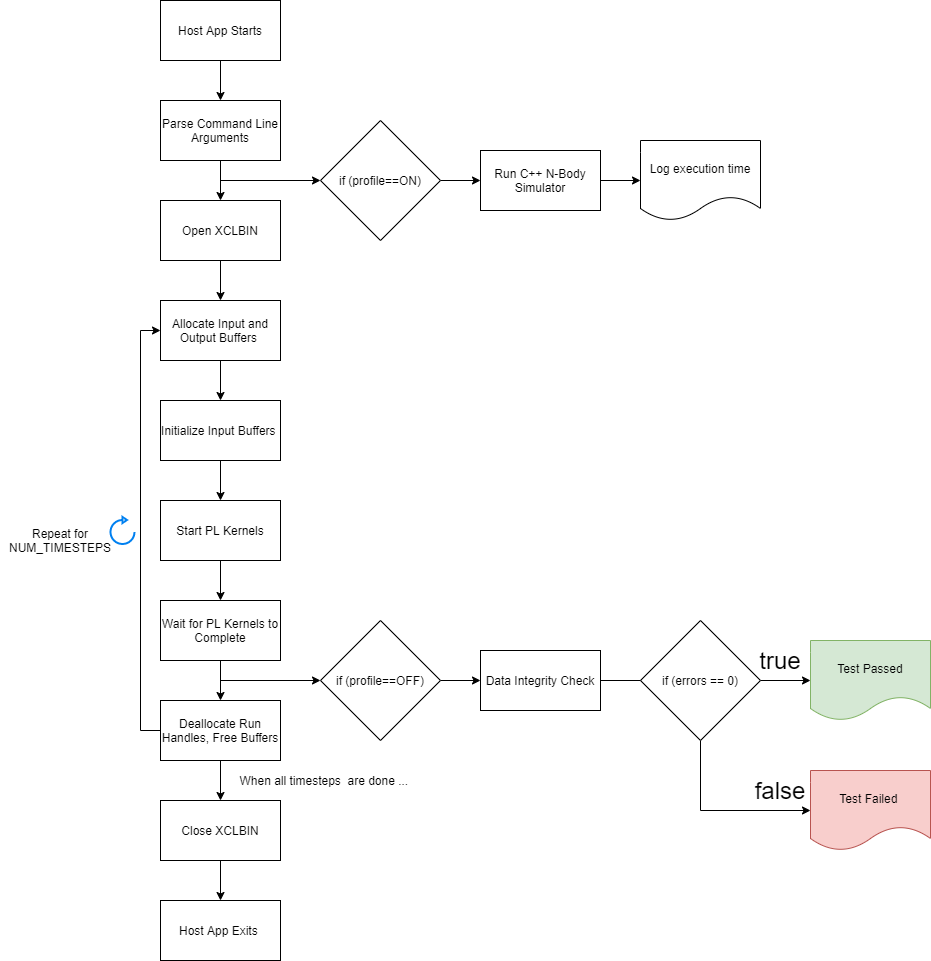

Estimated time: less than 1 minute
make all
or, follow steps 1 and 2 as follows:
Following is an example of how to compile the ../Module_02_aie/Work_x4_x100/ps/c_rts/aie_control_xrt.cpp file.
aarch64-linux-gnu-g++ -Wall -c -g \
-fmessage-length=0
-std=c++14 \
-Wno-unknown-pragmas
-Wno-unused-label
-Wno-int-to-pointer-cast
--sysroot=$SYSROOT
-I$SYSROOT/usr/include/xrt
-I$SYSROOT/usr/include
-I./
-I../Module_02_aie
-I../Module_02_aie/src
-I$XILINX_VITIS/aietools/include
-I$XILINX_VITIS/include
-I../Module_03_pl_kernels/Vitis_Libraries/utils/ext/xcl2
-I../Module_03_pl_kernels/Vitis_Libraries/utils/L1/include
-o ./build/aie_control_xrt.o
../Module_02_aie/build/Work_x4_x100/ps/c_rts/aie_control_xrt.cpp
The same compilation options were used to compile the host/nbody.cpp, host/log.cpp, host/main_xrt.cpp, and host/main_animate.cpp files.
Following is an example of how to link the build/aie_control.o, build/nbody.o, build/log.o, and build/ps_app.o into a build/ps_app.exe executable:
aarch64-linux-gnu-g++ ./build/aie_control_xrt.o \
./build/ps_app.o \
./build/log.o \
./build/nbody.o \
-lxaiengine -ladf_api_xrt -lxrt_core \
-lxrt_coreutil -lgcc -lc -lxilinxopencl \
-lpthread -lrt -ldl -lcrypt -lstdc++ \
-lOpenCL -std=c++14 \
-Wno-unused-label -Wno-narrowing \
-DVERBOSE \
-L$SYSROOT/usr/lib \
--sysroot=$SYSROOT \
-L$XILINX_VITIS/aietools/lib/aarch64.o \
-o ./build/ps_app.exe
The same linking options were used to generate the build/ps_app_animate.exe executable.
After the full hardware design is implemented, the next step is to focus on the host software that enables the entire design. In the Vitis™ core development kit, host code is written in C++ language using the Xilinx® runtime (XRT) API. The XRT native API is described on the XRT site.
This module compiles the following host applications and custom APIs:
host/nbody.cpp - NbodySimulator API that implements an NBody Simulator in C++
host/log.cpp - Logger API that logs messages to a file
host/main_xrt.cpp - Host application that compares AI Engine output to golden data (functional check)
host/main_animate.cpp - Host application that runs the design for multiple iterations and saves position data to a file to post-process and create an animation.gif later.
The NBodySimulator API is a C++ implementation of an N-Body Simulator which runs on the native A72 processor. It also writes the position data to an animation_data.txt file which you will post-process later to create an animation.gif.
The Logger API is used to save logging messages from the host applications to the run.log file. The host application can set the log level of which messages are written to the run.log and which messages are shown on the console during execution. By default, the log level is set to LMESSAGE, meaning all messages will be written to run.log. The cout log level is set to LINFO, meaning any messages set to LINFO will be also displayed on the output console during execution.
LMESSAGE
LINFO
LERROR
LNONE
The host/main_xrt.cpp host application is compiled into the build/ps_app.exe executable. This host application reads in the m2s_i.txt and input_j.txt files that initalize the m2s_x2 PL kernel’s ibuff and jbuff DDR buffer inputs. This host application starts the PL kernels and the AI Engine graph and waits for one iteration of data to flow through the design. Once the s2m_x4 PL kernel completes, this host application compares the AI Engine output to the golden output files (s2m_x4_k0.txt, s2m_x4_k1.txt, s2m_x4_k2.txt, and s2m_x4_k3.txt files). If there are any data mismatches, then the TEST FAILED, else the TEST PASSED. If you provide the --profile command line input, this host application also calculates the execution times for the C++ N-Body Simulator and the AI Engine N-Body Simulator for comparison.
The host/main_animate.cpp host application is compiled into the build/ps_animate.exe executable. This host application does the following:
uses the NBodySimulator API to generate initial data (input_i and input_j)
save the position data (x,y,and z) for all 12,800 particles to the animation_data.txt
feeds input data through the AI Engine design
captures the output data from the s2m_x4 kernel
reconstructs the output data into a new input_i and new input_j arrays
feeds the new input_i and input_j back into the AI Engine design and computes another timesteps
The host application repeats these actions for 300 timesteps. You can provide the --timesteps <num_timesteps> command line input to specify how many timesteps (iterations) the design runs for.
The following is the general execution flow for the host applications.

After compiling the host software, you are ready to create the sd_card.img and run the design on hardware in the next module, Module 06 - SD Card and Hardware Run.
© Copyright 2021 Xilinx, Inc.
Licensed under the Apache License, Version 2.0 (the “License”); you may not use this file except in compliance with the License. You may obtain a copy of the License at
http://www.apache.org/licenses/LICENSE-2.0
Unless required by applicable law or agreed to in writing, software distributed under the License is distributed on an “AS IS” BASIS, WITHOUT WARRANTIES OR CONDITIONS OF ANY KIND, either express or implied. See the License for the specific language governing permissions and limitations under the License.
XD068 | © Copyright 2021 Xilinx, Inc.